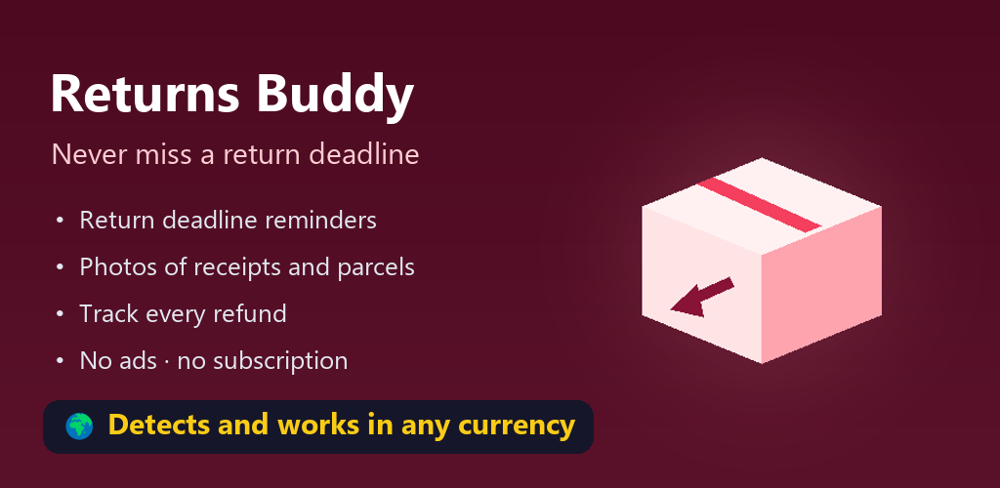
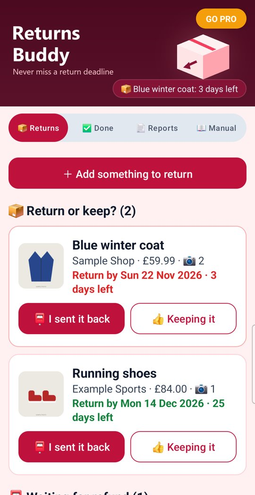
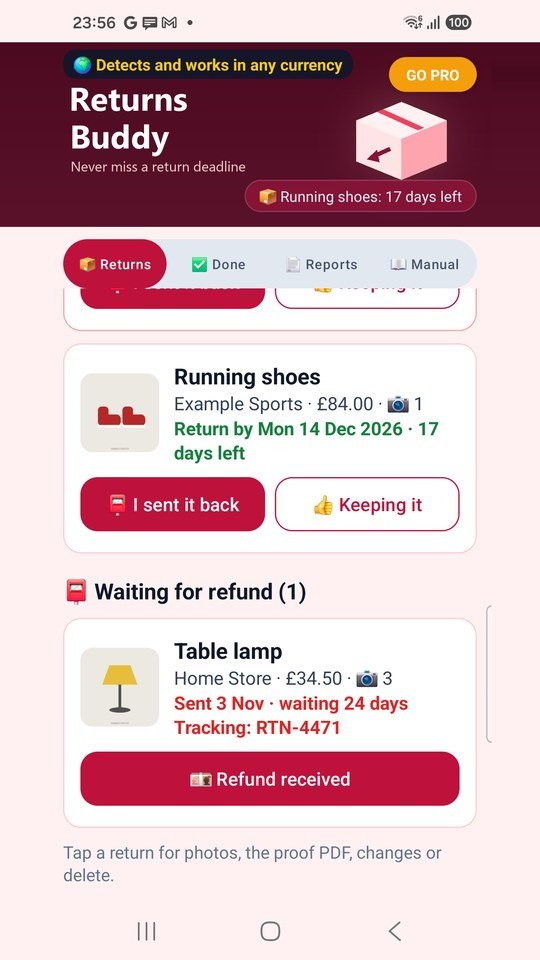
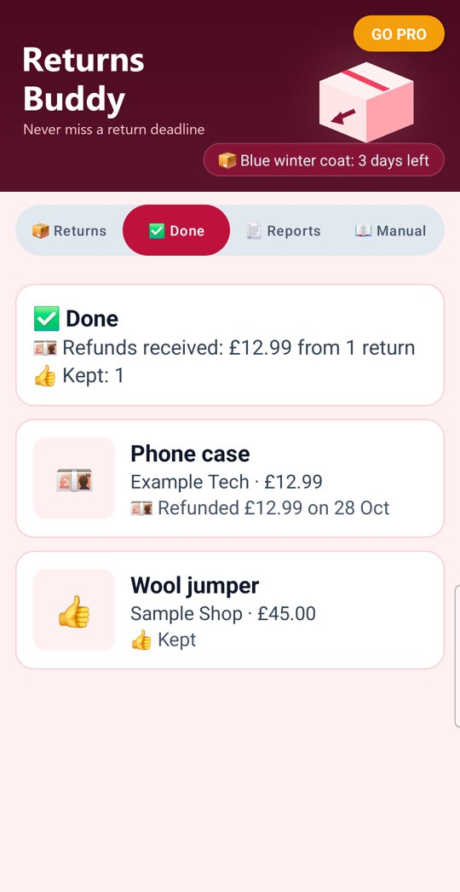
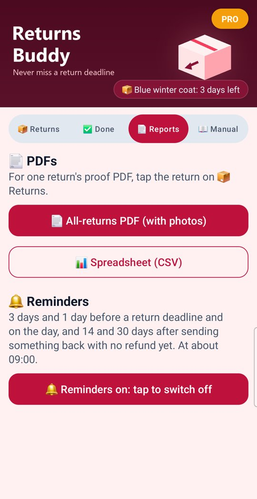

Everything below is the same text as the Manual in the app (📖 Manual tab).
Returns Buddy keeps track of things you might send back: the shop, the price, the order number and the date you must return it by. It reminds you before the deadline, keeps photos as proof, and follows each return until the refund arrives.
It doesn't connect to shops or couriers: the details are the ones you type in.
On 📦 Returns, tap ＋ Add something to return. Type what it is and, if you like, the shop, the price and the order number.
Set the day it was bought or delivered, then the return deadline: tap 14, 30 or 60 days, or pick the date. Check the shop's returns policy for the right number of days. In the UK you can usually cancel most online orders within 14 days of delivery, and many shops give longer.
Then take a photo of the receipt or the item, or choose one you already took.
Tap a return, then 📷 Add a photo, and choose what it shows: the receipt, the item, the parcel or the drop-off receipt. Each photo keeps the time it was added. Photos help if an item is damaged, a parcel goes missing or a refund doesn't arrive.
When you post or drop off the item, tap 📮 I sent it back. Type the tracking number or reference and take a photo of the drop-off receipt.
It then waits under "Waiting for refund" with the number of days. When the money comes back, tap 💷 Refund received and type the amount. If it's less than you paid, the difference shows.
Decided to keep it? Tap 👍 Keeping it. Refunded and kept items move to ✅ Done.
The app reminds you at about 09:00, 3 days and 1 day before a return deadline, and on the day. If you sent something back and no refund has been marked 14 days later, it reminds you to contact the shop, and again at 30 days.
Android may ask you to allow notifications. If the phone was off, you get the reminder the next morning. Switch reminders off or on in 📄 Reports.
If Android blocks the app's notifications, 📄 Reports shows 🔕 Notifications are blocked: tap it to allow them.
Free: up to 5 returns on the go at once (finished ones don't count), reminders, photos, refund tracking and the proof PDF for each return. No ads.
Pro (one payment, no subscription): unlimited returns at once, the all-returns PDF and the spreadsheet.
Tap GO PRO at the top. Restore purchase gets Pro back on a new phone with the same Google account.
No account, no sign-in, and no ads. Your returns and photos are kept only in the app's own storage on this phone. Returns Buddy has no servers and doesn't connect to shops or couriers. A PDF or spreadsheet only leaves the phone when you share it yourself.
Google Play handles the Pro purchase.
Returns Buddy v1.3 (Build 4)
Publisher: AppStack Studio
| Question | Many returns apps | Returns Buddy |
|---|---|---|
| Deadlines | Often missed in emails | Every return deadline in one list, with reminders 3 days and 1 day before and on the day |
| Refunds | Easy to forget | A nudge 14 and 30 days after sending something back with no refund yet |
| Price | Free with ads or a subscription | Free for 5 returns at once; Pro is one payment for life (no subscription) |

1. Deadlines
Every return with its deadline and days left.

2. Waiting for refund
What you sent back and how long you've waited.

3. Done
Refunds received, and any that were less than you paid.

4. Reports
All-returns PDF, spreadsheet and the reminder switch.
Screenshots: Returns Buddy 1.0 on a Samsung Galaxy S24, with sample returns, made-up shop names and drawn sample photos.